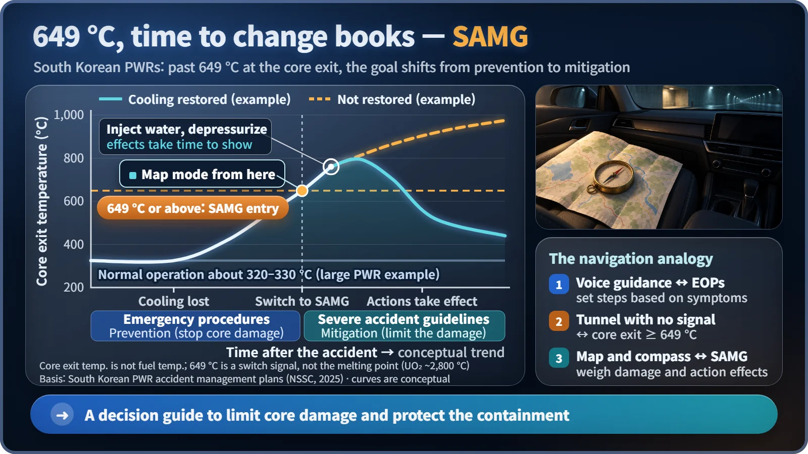
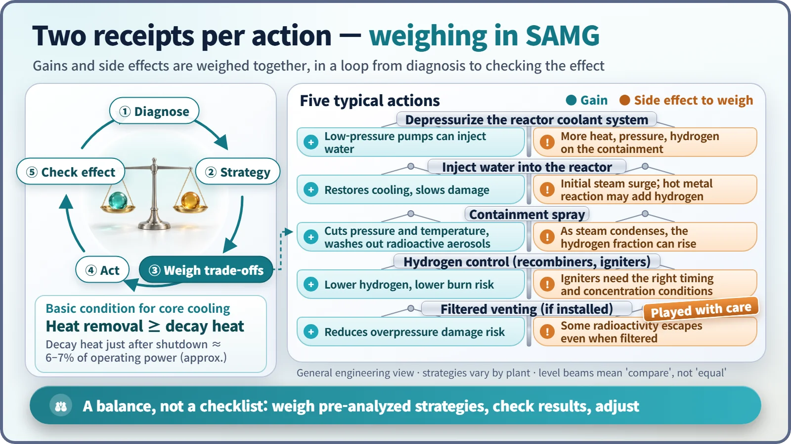

Safety Principles & Accident Analysis · 225
When the GPS Goes Dark, Unfold the Map — The Role of Severe Accident Management Guidelines (SAMG)
Once the core has begun to be damaged, the goal shifts from prevention to mitigation, and every action is weighed for what it gains and what it costs.
Severe accident management guidelines (SAMG) take over once the core has already started to be damaged. Instead of fixed step-by-step orders, they help an emergency organization weigh the benefits and side effects of each available action, with one aim: stop the damage from growing, protect the containment and minimize releases. [1]
The unusual last volume
A nuclear plant keeps several volumes of documents ready for accidents. The last one contains fewer clear-cut orders like "open valve A" and more sentences like "weigh what this action gains and what it costs." That volume is the severe accident management guidelines, or SAMG: a guide to using every means the plant has, once the core (where the fuel sits) has begun to be damaged, to keep the damage from spreading and minimize the release of radioactive material.
From preventing damage to limiting it
Accident response documents follow one another like steps: normal operating procedures, abnormal operating procedures, then emergency operating procedures. Up to there, the goal is preventing core damage (prevention). If cooling still isn't restored and the core is uncovered and heats up, the goal becomes not letting damage that has started grow, and reducing its consequences (mitigation). That is where SAMG takes the baton. [2]
The handover signal is defined. The accident management plans for pressurized water reactors in South Korea treat a core exit temperature of 649°C or above as a severe accident. The core exit temperature, measured in the coolant just above the fuel assemblies, is roughly 320–330°C in normal operation, so nearly doubling is a sure sign the core isn't being cooled. But 649°C is not the melting temperature of the fuel, which is about 2,800°C. It is a switch signal: time to open a different book. [2]

When the GPS drops out in a tunnel
Normally we just follow the GPS voice: "In 300 meters, turn right." Emergency operating procedures work like that, listing actions in order according to the symptoms. But if the signal drops in a long tunnel and the road ahead is blocked, you unfold the map and work out which road is less blocked and what you give up by taking it. SAMG is that map: a list of possible routes, with the cautions attached to each.
Why work this way? After core damage, some instruments can go beyond their design range, accidents unfold in too many ways to fix every sequence in advance, and above all almost every action has both a benefit and a side effect. [3]
Every action comes with two receipts
Putting water into a hot core cools it, but when zirconium cladding already near 1,200°C meets steam, the reaction speeds up and hydrogen and steam can increase at once. Spraying water inside the containment building lowers pressure and temperature, but as steam condenses, the share of hydrogen in the remaining gas can rise. Filtered venting protects the building from overpressure, but some radioactive material still gets out, so even plants that have it play that card carefully, as pressure nears its limit. [3]
| Action | What it gains | Side effect to weigh |
|---|---|---|
| Depressurize the reactor coolant system | Low-pressure pumps can inject water | More heat, pressure and hydrogen load on the containment |
| Inject water into the reactor | Restores cooling, slows damage | Initial steam surge; hot metal reaction may add hydrogen |
| Containment spray | Lowers pressure and temperature, washes out radioactive aerosols | As steam condenses, the hydrogen fraction can rise |
| Hydrogen control (recombiners, igniters) | Lowers hydrogen and burn risk | Igniters need the right timing and concentration |
| Filtered containment venting (if installed) | Reduces the risk of overpressure damage | Some radioactive material escapes even when filtered |

So the basic motion of SAMG is a loop, not a checklist: diagnose → choose a strategy → compare benefits and side effects → act → check the effect, then diagnose again. The main control room carries out set initial responses, and emergency organizations such as the emergency response headquarters then assess the situation and decide together. [2]
One balance to hold
Even after shutdown, the fuel keeps producing decay heat, about 6–7% of operating thermal power right after shutdown, falling but lasting for a while. So one balance always hangs there:
Heat removed by cooling ≥ decay heat newly produced → the temperature stops rising and the damage can be held
South Korea's accident management plans list five functions to protect in a severe accident: depressurizing the reactor coolant system and injecting water; putting water into the steam generators and the reactor cavity; depressurizing and cooling the containment; controlling hydrogen; and controlling releases of radioactive material. All aim to tip the balance back and protect the final barrier, the containment. [2]
Three misconceptions
SAMG doesn't mean accidents are frequent. It is the fourth of the five layers of defense in depth, prepared for very rare situations. [4] Judgment doesn't mean improvising. Strategies, their conditions and side effects are analyzed and written down in advance and practiced regularly: a map of a route already scouted. SAMG doesn't guarantee the outcome. The goals are to stop the damage, protect the containment as long as possible and minimize releases. After Fukushima, South Korea amended its Nuclear Safety Act to make an accident management plan that includes severe accidents a legal requirement from June 2016.
Key takeaways
Emergency operating procedures aim to prevent core damage; SAMG takes over at 649°C core exit temperature in South Korean PWRs and aims to limit it, weighing every action's benefits against its side effects in a loop. Nobody wants the GPS to die in a tunnel, but packing the map in advance is how a plant leaves even extremely unlikely situations covered.